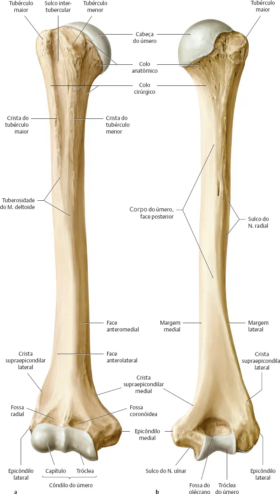
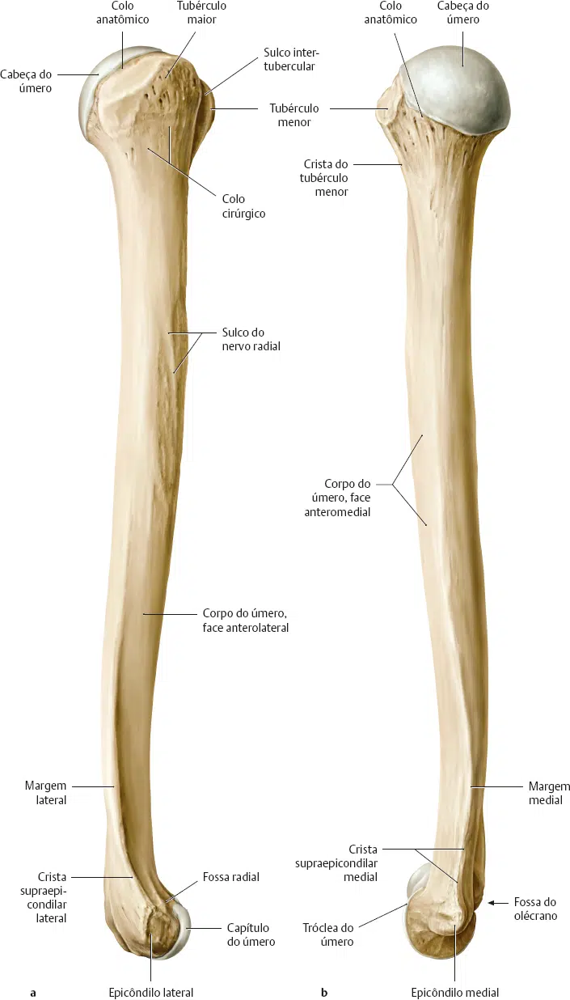

Trata-se de um osso longo, que se articula superiormente com a cavidade glenóide da escápula, e inferiormente com os ossos do antebraço, rádio e ulna.
Na extremidade proximal do úmero identificamos com facilidade a cabeça do úmero, superfície lisa e arredondada que se articula com a cavidade glenóide da escápula.
Note que a cabeça do úmero está “separada” do restante da extremidade proximal através de um sulco anular: o colo anatômico.
Lateralmente ao colo anatômico e em vista anterior, duas projeções podem ser identificadas: o tubérculo maior e o tubérculo menor do úmero.
Este último é ântero-medial.
Essas duas massas ósseas, destinadas à fixação dos músculos, estão separadas pelo sulco intertubecular que se prolonga em direção à diáfise do úmero.
A região do colo cirúrgico frequentemente é acometida por fraturas.

Logo abaixo do colo cirúrgico, o corpo do úmero se torna cilindróide, achatando-se no sentido antero-posterior à medida que se aproxima da extremidade distal.
Veja como o sulco intertubercular se prolonga, da extremidade proximal do úmero, onde se inicia, para o corpo, estando aí delimitado pelas cristas do tubérculo maior e do tubérculo menor.
Já a extremidade distal do úmero, curva-se anteriormente.
Existem duas expansões nodulares, o epicôndilo lateral e epicôndilo medial, destinados à fixação de músculos e ligamentos.
Note entre os epicôndilos lateral e medial, o relevo de superfícies articulares: o capítulo, lateral, que se articula com o rádio, e a tróclea, medial, em forma de polia ou carretel, que se articula com a ulna.
Duas fossas são visíveis na face anterior da extremidade distal do úmero: a fossa radial, superior ao capítulo, e a fossa coronóidea, superior à tróclea.
Essas fossas recebem partes dos ossos do antebraço nos movimentos de articulação do cotovelo (cúbito).
Em vista posterior, uma terceira fossa pode ser observada, situada superiormente à tróclea: a fossa do olécrano.
